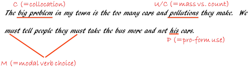

Feedback on learner production: correction routines

This guide does not cover the sorts of tasks that require comprehensive feedback and those which require little or none. All of that is covered in the simpler guide to managing feedback on and from tasks (new tab).
The concern here is with the form of feedback learners get on their
production, not the feedback you give on whole tasks and activities
concerning what people got right, half right and wrong.
We shall also not be commenting here on the feedback you give to
production which is acceptable or very good and needs no improvement.
The starting point for this guide is some
understanding of the importance of feedback to learners, especially
feedback on error, in terms of enhancing learning.
Lyster and Ranta, 1997:41, put the case like this:
Comprehensible input alone is not sufficient for successful L2 learning; comprehensible output is also required, involving, on the one hand, ample opportunities for student output and, on the other, the provision of useful and consistent feedback from teachers and peers
 |
Five sorts of feedback |
Five!
Relax, these are not complicated but having some way to classify what we
are doing when we give feedback and what learners expect us to be doing
helps in the thinking process. In what follows, we'll be
considering both feedback on spoken production and on written work.
Here are the five we'll be dealing with (based on Lyster and Ranta, 1997,
in which we have combined clarification and elicitation because they so
often occur together):
- Explicit correction
- Clarification and elicitation
- Metalinguistic feedback
- Recast
- Repetition
 |
Corrective feedback |
Corrective feedback is usually the novice teacher's first port of call and the form that many get stuck with throughout their teaching careers. It works like this:
- Spoken production:
- Student: I go yesterday
- Teacher: NO, that should be 'I went yesterday'
- Student: Ah, I went yesterday
- Written Production:

There are, of course, some issues with this on both sides of the argument.
| For corrective feedback | Against corrective feedback |
| It's familiar and
expected: This is the kind of feedback many learners are familiar with since their early school days. It is also the type of correction many say they actually want. |
It's easy to
ignore Learners may ignore both spoken and written feedback like this either by simply parroting what the teacher said or glancing at their writing and setting it aside. |
| It's quick: For spoken language, providing the error is obvious the correction can be focused on a single word, phoneme or word order issue (etc.). In written language it is slightly more cumbersome but the teacher needn't correct everything. |
It doesn't help
the learner notice the gap: Because the correction is done for them, learners may well not notice the important differences between their production and the target they were aiming for. |
| It's immediate: There is usually little delay between production and feedback and even written feedback correction can be done in class. |
It involves only
one learner: Other learners do not usually get to see written feedback and may well ignore someone else's oral feedback because it doesn't concern them. |
| It's easy to do: With a little practice, this kind of feedback can become almost automatic and call for little judgement from the teacher. |
It has little
long-term effect: Because the feedback is so immediate and brief, learners are not being challenged to improve and develop their language skills and knowledge. |
| It provides
reassurance: because learners get clear and unambiguous answers to issues. |
It's demotivating: simply to be told you are wrong or to receive written work covered in red pencil comments. |
| It's variable: The teacher can control the amount and sophistication of the correction given. |
It's non-involving: It is teacher-centred and does not encourage autonomy. |
 |
Clarification / elicitation routines |
These call for a little more work on the learners' (and teacher's) part. The object is to lead people to the right formulation rather than supplying it. It works like this:
- Spoken production:
- Student: I go yesterday
- Teacher: Are you talking about today or before today?
- Student: Before today
- Teacher: OK. So what form should the verb be in?
- Student: Ah, I went yesterday
- Written production:

Although this is slightly less reassuring for learners (because they
feel they are being interrogated sometimes), clarification via
elicitation has all the advantages listed above.
It also tackles some of the criticisms because it does require some
thought on the learner's part and that may well have a positive
long-term effect.
Learners can, however, often ignore this form of feedback, too, after
they have achieved something acceptable.
It also usually concerns only one learner at a time so others in the
group may not benefit or even listen and are unlikely to have access to
the written text (although that can be arranged). Nevertheless,
there is some evidence that other learners do listen to this kind of
feedback, even when it is not directed at them and they benefit from the
thinking process it demands.
 |
Metalinguistic feedback |
This involves some talk about language rather than the insertion of the language itself. It works like this:
- Spoken production:
- Student: I go yesterday
- Teacher: You need the past simple form for completed actions
- Student: Ah, I went yesterday
- Written production:

Clearly, this kind of feedback relies on the learners actually knowing what you are talking about. If they do, however, this can be a powerful approach because it forces the learners to apply knowledge about the language to its actual production. That way, they can be alerted to applying their knowledge and noticing how the language functions.
 |
Recasts |
This is sometimes called reformulation and involves the teacher simply taking the learner's intent and casting it in a more accurate / acceptable form. It works like this:
- Spoken production:
- Student: I go yesterday
- Teacher: You went yesterday
- Student: Ah, I went yesterday
- Written production:

Recasts, of course, suffer somewhat from the same problems that
simple corrective feedback exhibits. They can often be ignored and
if the recast is too different from the learners' output, it can be
difficult for them to identify (i.e., notice) what exactly is being
corrected, especially in oral work.
An advantage of recasting is that the teacher can, by simple repetition,
signal the parts of what has been said which are accurate and focus on
the issue, like this, for example:
- Student: My friend and I went to the cinema for watching that movie and we loved it.
- Teacher: That's nice. So you and your friend went to the cinema to see that movie, right?
If overused, recast can also become frustrating for learners because they can feel that nothing they say first time around is acceptable.
 |
Repetition and highlighting |
Getting learners to notice salient features of language systems or how their production differs from the targets can often be achieved by simple repetition and highlighting. It works like this:
- Spoken production:
- Student: I go yesterday
- Teacher: You go yesterday?
- Student: Ah, I went yesterday
- Written production (usually involving some kind of simple
correction code):

Highlighting through repetition can be an effective aid to
noticing (and thus encourage a certain amount of learner autonomy).
The trick, as always is to make sure that the focus is maintained
and only on manageable parts of the learner's production.
Unlike recasting, in which learners are being asked to notice the
gap between their production and a model, this kind of feedback
encourages noticing the language system in its entirety.
Non-verbal highlighting |
Often, in the classroom, the highlighting can be achieved non-verbally by a lifting of an eyebrow, banging your head on the board, hand gestures and so on.
Of course, this kind of feedback is most effective with post-systematic error which the learners can self correct. If learners actually do not have mastery of the issue you are highlighting, everyone's time is being wasted because the learners will be stabbing in the dark and getting frustrated and disheartened.
Combining the feedback forms |
This is common. One might, for example, start the process by
repetition and highlighting and then, when it doesn't work, move on to
clarification and elicitation and, when that doesn't work, resort to
metalanguage or straightforward corrective feedback.
That's not an admission of failure.
|
|
Impact |
The question which remains to be addressed concerns which sorts
of feedback and correction have the most (i.e., best) impact on the
learning process.
To consider that we need to consider uptake.
If feedback is simply ignored or the learner is not given the
opportunity to rephrase and reconsider what has been said, then
uptake is effectively zero because we can say nothing about whether
the error is likely to recur or even whether the learner has noticed
the feedback given. It is true that the learner may
have taken the correction on board but we have no way of knowing.
Lyster and Ranta, 1997:54, attempted to measure the impact of
correction routines in classes in Canada where French was being
taught in an immersion programme (i.e., through the use of
French-only lessons in school). The focus was on whether there
was evidence of uptake by the learner with, for example, repetition
of the correct form, self-repair and so on.
Although the circumstances were rather unusual, here's what they
found:
- Explicit correction
resulted in 50% uptake by the learner - Clarification requests and elicitation
resulted in 88% uptake - Metalinguistic feedback
resulted in 86% uptake - Recast
resulted in 31% uptake - Repetition
resulted in 78% uptake
The authors concluded that:
The most successful technique for eliciting
uptake is elicitation
(Ibid)
They also noted, as should we, that
metalinguistic feedback is almost as good (and within the bounds of
statistical error, just as good) because both clarification and
metalinguistic feedback force the learners to focus on the language
system and apply their knowledge of it consciously to their
production.
The most ineffective routine was recast (although it was found to be
a popular one among teachers) with nearly 70% ineffectiveness in
showing that the learners had learned anything at all from the
recasting.
We should not necessarily read too much into these numbers
because the skill with which the various forms of feedback
correction is conducted may be quite different in different cases.
The art, for example, of choosing the focus of the correction
carefully and forcing the learners to notice the gap between a model
and their production should not be underestimated.
For more on that, follow the guide to noticing, linked below.
Another variable is, naturally, how one measures uptake. It may be demonstrated by the learner's overt use of the correction at the time but how long the effect lasts and how permanent the improvement is, is much more difficult to estimate, let alone measure.
| Related guides | |
| error | for the overview of sources of errors and how to deal with them |
| teacher-induced error | for ways to avoid your feedback and materials actually producing errors |
| noticing | for a guide to what it is, why we use it and how to conduct procedures which encourage it |
| managing feedback | for an obviously related guide |
Reference:
Lyster, R and Ranta, L, 1997, Corrective Feedback and Learner
Uptake: Negotiation of Form in Communicative Classrooms,
in Studies in Second Language Acquisition, March 1997, Cambridge:
Cambridge University Press